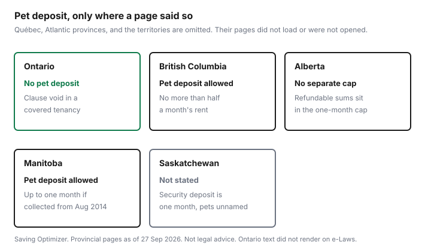

Pets · Canada
Pet Deposits and Pet Fees Across Canada: What Landlords Can Charge by Province
A pet fee that is legal in one province can be the payment you should not make in another. This page compares only the provincial pages that checked 27 Sep 2026, plus the Ontario rule as this site’s own renting guide quotes it, because the statute page itself returned a JavaScript wall. Québec is not given a fresh article number here; check the Civil Code of Québec. Atlantic provinces and the territories are not covered here. Not legal advice. Confirm the section with the tribunal or branch named on the page for that province.
Key takeaways
- Check Ontario’s e-Laws text directly. The Ontario renting guide is where the no-pet clause and the rent-deposit rule are written out. Do not pay a pet deposit on the strength of a listing.
- British Columbia: pet damage deposit no more than half a month’s rent, one deposit however many pets, no monthly pet fee. Example on the pets page: $1,500 rent, pet deposit no more than $750. Updated 11 August 2026.
- Alberta: security deposit no more than one month’s rent at the start, and it cannot be increased. Refundable fees count toward that cap. A non-refundable pet fee is not a security deposit. The June 2025 handbook’s example is $100 per pet, which is an illustration, not a legal maximum.
- Manitoba’s Residential Tenancies Branch sheet: a pet damage deposit collected on or after 1 August 2014 can be up to one month’s rent. One deposit only. Service animals are excluded. The sheet’s footer says December 2019.
- Saskatchewan’s security-deposit page caps that deposit at one calendar month and does not mention a pet deposit or a no-pet clause. The Office of Residential Tenancies filing fee printed there is $50.
Why rules differ by province
Residential tenancies are provincial. A sentence you learned in Toronto does not travel to Vancouver, and a Vancouver half-month pet deposit is not something to offer an Ontario landlord to “make the dog okay.” The useful question is narrower than “are pets allowed in Canada?” It is: on this agreement, in this province, is a pet deposit a deposit the law names, is a no-pet line something the landlord can keep, and is the building a condo or a strata with a second set of documents?
Money and permission are different lines. British Columbia can allow a capped pet damage deposit and still allow a no-pets clause in the agreement. Ontario’s renting guide treats the no-pet clause in a covered tenancy as void and the pet deposit as not the rent deposit. Mixing those two ideas is how renters pay a fee the province does not provide for. The national tenant-rights guide is the wider deposit map. This page stays on pets.
Province table: pet deposits, pet fees and no-pet clauses (sourced provinces)
Provinces not covered are omitted, not marked “allowed.” Québec is the Québec renters guide. The table does not repeat that guide’s Civil Code article number.
| Province | Pet deposit allowed? | Limit on the page | No-pet clause | Source |
|---|---|---|---|---|
| Ontario | Not as a security deposit, in the Ontario guide’s reading of the Act. | No pet-deposit dollar. The guide describes a rent deposit capped at the lesser of one rent period and one month. | Void in a tenancy agreement the Act covers, with exemptions and a condo-document exception, as that guide states it. | Check e-Laws directly. Ontario pets and tenancies guide. |
| British Columbia | Yes, a pet damage deposit, if pets are allowed. | No more than half of one month’s rent. One deposit regardless of the number of pets. No monthly pet fee. Example: $1,500 rent, no more than $750. | A no-pets clause can be in the agreement. The landlord does not have to change it. Size, type, and number can be limited. | B.C. pets and tenancy, updated 11 Aug 2026. Deposits and fees, updated 4 Mar 2026. |
| Alberta | No separate pet-damage deposit is named on the pages checked. | Security deposit no more than one month’s rent at the start. Refundable fees count toward that cap. Non-refundable fees do not. Handbook example: $100 per pet, not a cap. | The agreement can include rules for pets. The page does not say a no-pet rule is void. | Alberta.ca starting a tenancy, checked 27 Sep 2026. RTA Handbook, June 2025. Residential Tenancies Act, s. 43. |
| Manitoba | Yes, a pet damage deposit, when the landlord allows a pet. | On or after 1 Aug 2014: up to one month’s rent. From 30 Jun 2010 through 31 Jul 2014: not more than half a month. One deposit only. Not for a service animal. Not for a pet the landlord already allowed before 30 Jun 2010. | The Branch FAQ uses “a no pet rule” as an example of a term of the agreement. | Manitoba RTB deposits fact sheet, footer Dec 2019, checked 27 Sep 2026. RTB general FAQ, checked the same day. |
| Saskatchewan | A separate pet deposit is not described. | Security deposit no more than one calendar month’s rent. At the start, at most 50 percent of that deposit, the rest within two months of possession. | Not stated on the security-deposit page. | Saskatchewan.ca security deposits, checked 27 Sep 2026. |

Ontario: no pet deposits and void no-pet clauses (with condo exceptions)
Check the statute text on e-Laws for the section. What this site has already published, in the Ontario renting-with-pets guide, is the reading to use until you open e-Laws yourself.
That guide says section 14 voids a provision in a tenancy agreement that prohibits animals in or about the residential complex, that section 5 exempts some occupancies including a shared kitchen or bathroom with the owner or listed family who live there, and that a condominium’s declaration, by-laws, and rules are a different document that can still restrict pets. It also says the only security deposit is a rent deposit, and that a damage deposit is not allowed. This page does not retype those sections and does not invent a fine for charging one.
A landlord can still choose a tenant at the start, within human-rights limits the Ontario guide discusses. “I will not rent to you” at the application stage is not the same sentence as a no-pet clause inside an agreement the Act covers. Do not pay a pet deposit to skip that distinction. Key deposits and other fees the Act speaks to are the Ontario tenant-fees guide. If you are unsure the Act applies, the Landlord and Tenant Board is the office the Ontario guide names. This page will not decide your unit.
BC: pet damage deposits
The pets page, last updated 11 August 2026, says the tenancy agreement is where the landlord states whether pets are allowed. Landlords do not have to allow pets.
A no-pets clause means pets cannot be in the unit, and the landlord is not required to change it because a tenant later wants an animal. A change should be in writing, either as a separate agreement or by initialling the original. Landlords may limit size, type, and number. The page also says that if a tenant can prove a verbal agreement to allow the pet, the landlord may not be able to enforce the restriction. That is the page’s sentence about proof. It is not a promise that a conversation will win.
The deposit sentence in the body is “no more than half of one month’s rent,” one pet deposit no matter how many pets are allowed. The example is $1,500 a month and a pet deposit of no more than $750. The landlord can ask when a new tenant with a pet moves in, or when a tenant gets a pet for the first time with permission. The contents menu on the same page says “less than half.” The deposits page, updated 4 March 2026, matches the body: no more than half, and it adds that landlords cannot charge a fee for pets beyond the pet damage deposit, such as a monthly pet fee. If both a security deposit and a pet damage deposit are collected, the deposits page says the landlord can ask for a full month’s rent, because each half adds up. The security-deposit example on that page is also $1,500 rent and no more than $750, set by the rent at the start. Later rent increases do not raise it.
Landlords cannot keep the pet deposit on their own. The path on the page is agreement in writing or an application to the Residential Tenancy Branch. The deposit comes back at the end of the tenancy if there is no pet-related damage. It does not have to come back early because the pet died or moved out. Guide and service dogs are not pets. Certification is voluntary. A landlord cannot reject an applicant only because the dog is not certified, cannot put restrictions on the dog, and cannot require a pet damage deposit. The return clock, the inspection form, and deposit interest are the B.C. security-deposit guide. This page does not restate that clock. Before a pet moves in, the pets page says the landlord schedules an inspection and points to the condition inspection report, form RTB-27.
Other provinces: what the tenancy acts say
Alberta’s starting-a-tenancy page says a security deposit cannot be more than one month’s rent at the time the tenancy starts, and that it cannot be increased later. The Residential Tenancies Act section linked from that page, section 43, is the same cap and the same ban on increasing the deposit.
The June 2025 RTA Handbook says a refundable fee is part of the security deposit, so the deposit plus other refundable fees cannot pass one month’s rent. A non-refundable fee agreed in the tenancy agreement is not a security deposit and is treated as part of the rent. The handbook’s example is a landlord charging $100 per pet as a non-refundable fee. That $100 is an example in a government handbook. It is not a maximum, a minimum, or evidence of what landlords charge. The starting-a-tenancy page lists “rules for … pets” among clauses an agreement may contain. It does not say those rules are void. There is no Ontario-style sentence on the pages checked.
Manitoba’s Residential Tenancies Branch deposits sheet, with a December 2019 footer, allows a security deposit of not more than half the first month’s rent. Its own example is $800 rent and a $400 deposit, calculated on the full rent rather than a discounted rent. A pet damage deposit collected between 30 June 2010 and 31 July 2014 cannot be more than half a month. One collected on or after 1 August 2014 can be up to one month’s rent. A tenant who already paid cannot be asked to top it up to the later cap. Only one pet damage deposit is allowed, however many pets. A pet the landlord allowed before 30 June 2010 cannot be the reason for a new pet deposit. Tenants who rely on a service animal cannot be charged one. If there are no problems at the end, deposits plus interest go back within 14 days. The sheet says the government sets the interest rate and points you to the Branch calculator. This page does not list that rate, so no percentage is printed. The Branch FAQ, checked the same day, uses having a pet despite a “no pet” rule as an example of breaking a term, and it describes a chance to correct the problem and then notice of one rental payment period. That is an example on a FAQ, not a judgment about your building.
Saskatchewan’s security-deposit page allows a security deposit of no more than one calendar month’s rent. When the tenancy is entered into, the landlord may require at most 50 percent of that deposit, with the rest payable within two months of the tenant taking possession. The page does not mention pets, pet fees, or no-pet clauses. Those cells stay empty. A landlord may not write into the agreement that the deposit is kept automatically. A claim goes to the Office of Residential Tenancies, and the page prints a $50 filing fee for applications. Interest remains payable only for tenancies over five years, and only up to 30 days after the end date. None of that is a pet rule. Do not invent one.
The annual cost of the animal, if the tenancy is allowed, is still the dog-cost guide. A vet bill is not a deposit. The vet-bill guide is that invoice. City licence fees, which are not a landlord’s charge, are the licence guide.
Negotiating with landlords: pet résumés and references
Negotiation starts after you know which of the rows above is the lease in your hand. Offering a “pet deposit” in Ontario, because a listing asked, is not a compromise this page can bless.
Offering to pay a monthly pet fee in British Columbia cuts against the deposits page, which says that fee is not allowed beyond the pet damage deposit. In Alberta, a refundable add-on still has to fit inside the one-month security cap. A non-refundable fee, if you agree to it in the tenancy agreement, is the handbook’s category, and you should know you will not get the handbook’s example back.
A pet résumé is a one-page description: species, age, whether the animal is altered, where it will sleep, who looks after it during the day, and references from a previous landlord or a neighbour who has actually lived with the animal. Training history belongs there only if you can point at it. The rental-application guide is how to send documents you control without paying an application fee those guides already flag. Ask for the agreement before you transfer a deposit. In a condo, ask for the declaration and rules as well. In a B.C. strata, the tenancy pages are not the bylaws. Read the bylaws. A verbal “pets are fine” is exactly the situation the B.C. page says you may have to prove. Write the change down.
Sources
- Ontario e-Laws, Residential Tenancies Act, 2006, URL checked 27 Sep 2026, JavaScript wall, no section text. Ontario rule attributed to this site’s renting-with-pets guide, which quotes that Act and the Condominium Authority of Ontario tenant guide. Not retyped here.
- Government of British Columbia, pets and tenancy, updated 11 August 2026. Deposits and fees, updated 4 March 2026. Half-month caps, $1,500 / $750 examples, no monthly pet fee, no-pets clauses, guide and service dogs, RTB-27.
- Alberta.ca, starting a tenancy, checked 27 Sep 2026. One-month security deposit, pet rules as a lease topic. Residential Tenancies Act, s. 43. RTA Handbook, June 2025: refundable fees inside the cap; non-refundable $100-per-pet example.
- Manitoba Residential Tenancies Branch, deposits fact sheet, footer December 2019, checked 27 Sep 2026. Pet damage deposit caps by collection date, 14-day return, service animals. Branch FAQ checked 27 Sep 2026 for the no-pet example.
- Saskatchewan.ca, security deposits, checked 27 Sep 2026. One calendar month, 50 percent at the start, $50 filing fee. Pets not mentioned.
- Québec, Atlantic provinces, territories, and strata bylaws: not covered here as pet-deposit text.
Frequently asked questions
Can a landlord charge a pet deposit in Ontario?
Check the Residential Tenancies Act section text on e-Laws. This site’s Ontario renting guide, which quotes that Act, says the only security deposit is a rent deposit and that a pet deposit is not that deposit. Read that guide and open the statute before you pay. This national page does not add an Ontario dollar figure. It is not legal advice.
How much is a pet damage deposit in BC?
British Columbia’s pets page, updated 11 August 2026, says a pet damage deposit must be no more than half of one month’s rent, one deposit no matter how many pets, and gives $1,500 rent as an example with a pet deposit of no more than $750. The deposits page, updated 4 March 2026, uses the same half-month cap and says a landlord cannot add a monthly pet fee on top. A contents line on the pets page says “less than half.” The body text says “no more than half.” Use the body, and confirm with the Residential Tenancy Branch.
Are no-pet clauses legal?
It depends on the province, and this page is not a ruling. British Columbia’s pets page says some agreements include a no-pets clause and that landlords are not required to change it. Manitoba’s Residential Tenancies Branch FAQ uses a no-pet rule as an example of a term a tenant can be asked to correct. Ontario’s renting guide says a no-pet provision in a tenancy agreement the Act covers is void, with exemptions and a separate condo-document question. Alberta’s starting-a-tenancy page says the agreement can include pet rules and does not say those rules are void. Saskatchewan’s security-deposit page does not discuss pets.
Can my condo ban pets?
In Ontario, the renting guide treats condominium declarations, by-laws, and rules as a different document from the tenancy clause the Act voids. This page does not retype that guide. British Columbia’s pets and deposits pages are about residential tenancies. They do not state a strata bylaw rule, so a strata building is a document you still have to read. No other province’s condo statute is covered here for pets.
How do I convince a landlord to accept my pet?
Start with the rule that actually applies, so you are not offering money the province does not allow. Ask for the tenancy agreement, and in a condo or strata the governing documents, before you pay. A short pet résumé is a description of the animal, references, and a training history you can verify. It is not a deposit. In British Columbia, any change that allows a pet should be in writing. Nothing on this page obliges a landlord to say yes.
Researched and drafted with AI assistance and fact-checked against official Canadian sources. How we create content.